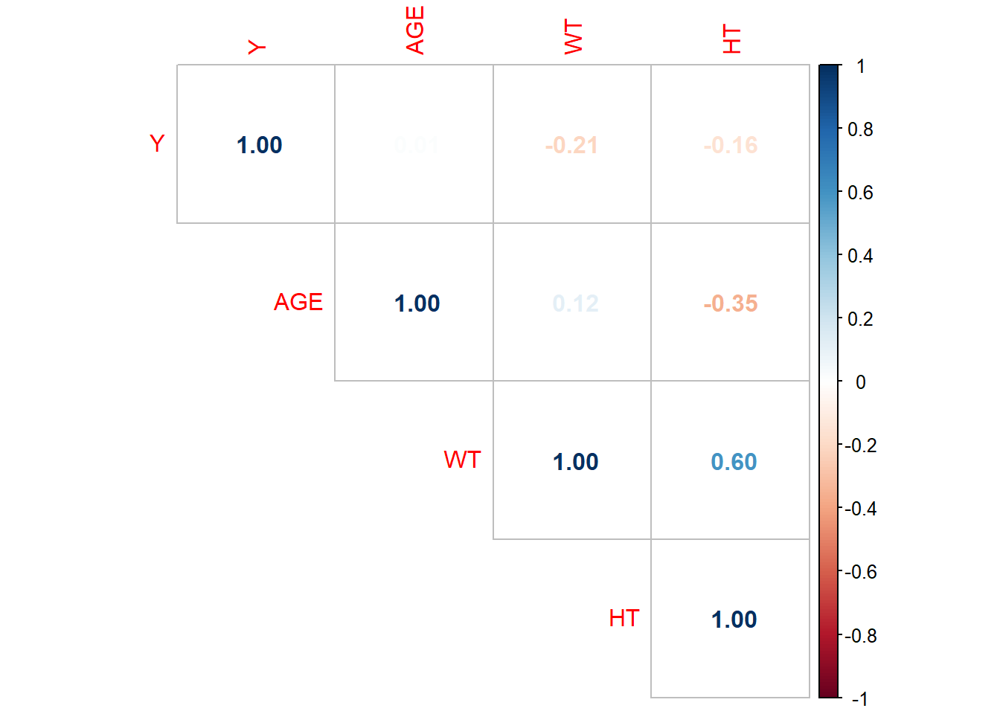

You have loaded plyr after dplyr - this is likely to cause problems.
If you need functions from both plyr and dplyr, please load plyr first, then dplyr:
library(plyr); library(dplyr)
Make a pairwise correlation plot for continuous variables
cor_df <- df %>%select(-DOSE, -SEX, -RACE)cor_plot1 <- corrplot::corrplot(cor(cor_df, use ="complete.obs"), method ="number", type ="upper")

cor_plot1
$corr
Y AGE WT HT
Y 1.00000000 0.01256372 -0.2128719 -0.1583297
AGE 0.01256372 1.00000000 0.1196740 -0.3518581
WT -0.21287194 0.11967399 1.0000000 0.5997505
HT -0.15832972 -0.35185806 0.5997505 1.0000000
$corrPos
xName yName x y corr
1 Y Y 1 4 1.00000000
2 AGE Y 2 4 0.01256372
3 AGE AGE 2 3 1.00000000
4 WT Y 3 4 -0.21287194
5 WT AGE 3 3 0.11967399
6 WT WT 3 2 1.00000000
7 HT Y 4 4 -0.15832972
8 HT AGE 4 3 -0.35185806
9 HT WT 4 2 0.59975050
10 HT HT 4 1 1.00000000
$arg
$arg$type
[1] "upper"
Nothing seems super correlated!
Compute BMI I am going to assume height is in meters, and weight in kg Plugging random values into a calculator and converting into imperial gives me weights and heights that make sense The formula I found is weight(kg)/height(m)^2
df1 <- df %>%mutate(BMI = WT/(HT*HT))
Create 3 models using all variables 1. linear 2. Lasso 3. random forest Make predictions for entire data set Make observed vs. predicted plots
lm_mod1 <-linear_reg()lm_fit1 <- lm_mod1 %>%fit(Y ~ DOSE * AGE * SEX * WT * HT * RACE, data = df1)ls_mod1 <-linear_reg(penalty = .1) %>%set_engine("glmnet")ls_fit1 <- ls_mod1 %>%fit(Y ~ DOSE * AGE * SEX * WT * HT * RACE, data = df1)rf_mod1 <-rand_forest(trees =1000) %>%set_engine("ranger", seed = rngseed) %>%set_mode("regression")rf_fit1 <- rf_mod1 %>%fit(Y ~ DOSE * AGE * SEX * WT * HT * RACE, data = df1)lm_fit1
parsnip model object
Call:
stats::lm(formula = Y ~ DOSE * AGE * SEX * WT * HT * RACE, data = data)
Coefficients:
(Intercept) DOSE
3.737e+05 -1.280e+04
AGE SEX2
-1.288e+04 -3.292e+05
WT HT
-4.527e+03 -2.100e+05
RACE2 RACE3
-4.538e+05 9.386e+03
DOSE:AGE DOSE:SEX2
4.358e+02 -5.401e+02
AGE:SEX2 DOSE:WT
6.850e+03 1.561e+02
AGE:WT SEX2:WT
1.545e+02 1.827e+03
DOSE:HT AGE:HT
7.201e+03 7.281e+03
SEX2:HT WT:HT
1.471e+05 2.547e+03
DOSE:RACE2 DOSE:RACE3
2.147e+04 2.877e+02
AGE:RACE2 AGE:RACE3
1.602e+04 -4.309e+02
SEX2:RACE2 SEX2:RACE3
2.501e+04 3.402e+03
WT:RACE2 WT:RACE3
6.087e+03 -1.259e+02
HT:RACE2 HT:RACE3
2.675e+05 -8.428e+02
DOSE:AGE:SEX2 DOSE:AGE:WT
-4.216e+01 -5.229e+00
DOSE:SEX2:WT AGE:SEX2:WT
2.333e+00 -1.251e+01
DOSE:AGE:HT DOSE:SEX2:HT
-2.446e+02 1.332e+03
AGE:SEX2:HT DOSE:WT:HT
-2.849e+03 -8.741e+01
AGE:WT:HT SEX2:WT:HT
-8.735e+01 -8.342e+02
DOSE:AGE:RACE2 DOSE:AGE:RACE3
-7.186e+02 -3.082e+00
DOSE:SEX2:RACE2 DOSE:SEX2:RACE3
NA 1.653e+01
AGE:SEX2:RACE2 AGE:SEX2:RACE3
-1.493e+02 NA
DOSE:WT:RACE2 DOSE:WT:RACE3
-2.718e+02 -2.532e+00
AGE:WT:RACE2 AGE:WT:RACE3
-2.064e+02 6.228e+00
SEX2:WT:RACE2 SEX2:WT:RACE3
-2.356e+02 NA
DOSE:HT:RACE2 DOSE:HT:RACE3
-1.230e+04 NA
AGE:HT:RACE2 AGE:HT:RACE3
-9.464e+03 NA
SEX2:HT:RACE2 SEX2:HT:RACE3
NA NA
WT:HT:RACE2 WT:HT:RACE3
-3.565e+03 NA
DOSE:AGE:SEX2:WT DOSE:AGE:SEX2:HT
NA NA
DOSE:AGE:WT:HT DOSE:SEX2:WT:HT
2.937e+00 NA
AGE:SEX2:WT:HT DOSE:AGE:SEX2:RACE2
NA NA
DOSE:AGE:SEX2:RACE3 DOSE:AGE:WT:RACE2
NA 8.881e+00
DOSE:AGE:WT:RACE3 DOSE:SEX2:WT:RACE2
NA NA
DOSE:SEX2:WT:RACE3 AGE:SEX2:WT:RACE2
NA NA
AGE:SEX2:WT:RACE3 DOSE:AGE:HT:RACE2
NA 4.143e+02
DOSE:AGE:HT:RACE3 DOSE:SEX2:HT:RACE2
NA NA
DOSE:SEX2:HT:RACE3 AGE:SEX2:HT:RACE2
NA NA
AGE:SEX2:HT:RACE3 DOSE:WT:HT:RACE2
NA 1.552e+02
DOSE:WT:HT:RACE3 AGE:WT:HT:RACE2
NA 1.214e+02
AGE:WT:HT:RACE3 SEX2:WT:HT:RACE2
NA NA
SEX2:WT:HT:RACE3 DOSE:AGE:SEX2:WT:HT
NA NA
DOSE:AGE:SEX2:WT:RACE2 DOSE:AGE:SEX2:WT:RACE3
NA NA
DOSE:AGE:SEX2:HT:RACE2 DOSE:AGE:SEX2:HT:RACE3
NA NA
DOSE:AGE:WT:HT:RACE2 DOSE:AGE:WT:HT:RACE3
-5.107e+00 NA
DOSE:SEX2:WT:HT:RACE2 DOSE:SEX2:WT:HT:RACE3
NA NA
AGE:SEX2:WT:HT:RACE2 AGE:SEX2:WT:HT:RACE3
NA NA
DOSE:AGE:SEX2:WT:HT:RACE2 DOSE:AGE:SEX2:WT:HT:RACE3
NA NA